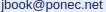

Průvodce programovacím jazykem Java od jeho základů přes základy jazyka HTML
až po interaktivní webové aplikace.
Součástí knihy jsou řešené příklady ve formě spustitelného projektu.
Anotace
Průvodce začátečníka programovacím jazykem Java od jeho základů až po interaktivní webové aplikace.
V první části knihy čtenář získá znalost pojmů objektového programování, přehled o datových typech
a užitečných metodách standardní knihovny jazyka, setká se s pojmy potřebnými pro stavbu webových stránek.
Druhá část knihy přináší výklad použitých programových konstrukcí na pozadí řešených aplikací.
Java patří dlouhodobě mezi nejžádanější programovací jazyky na trhu práce v oboru informačních technologií.
Ukázka knihy je tady.
Komu je kniha určena
Kniha cílí na studenty středních škol, šířka tématu a pojetí přiložených příkladů však osloví i pokročilejší čtenáře a začínající programátory.
Kniha může inspirovat také pedagogy a čtenáře dalších profesí se zájmem o informační technologie a vývoj SW aplikací.
Proč jsem knihu napsal
S programovacím jazykem Java jsem začal přibližně před dvaceti lety.
Když jsem tehdy studoval knihy renomovaných autorů, kladl jsem si otázku,
zdali není možné napsat učebnici nějakým více atraktivním způsobem.
Důležité zkušenosti a nadhled jsem však začal nabývat až praxí.
Čas plynul a po mnoha letech jsem zveřejnil krátký článek o sestavování webových stránek v jazyce
Java postavených na objektovém modelu HTML elementů a přitom mě napadlo,
že právě tohle by mohl být výborný prostředek pro tvorbu interaktivních učebnicových příkladů při studiu jazyka.
V nejbližším knihkupectví jsem otevřel namátkou jednu z nových učebnic tohoto jazyka a spatřil
opět formální popis s černobílými obrázky, akademickými příklady a několika málo grafickými ukázkami
postavenými na dnes už zacházející knihovně Swing.
Tehdy jsem se rozhodl vykročit na nejistou dráhu inovativního spisovatele učebnice o programování.
Příklady
Po zakoupení knihy si prosím uschovejte doklad o nákupu, protože vás opravňuje používat ukázkové příklady k soukromým i komerčním účelům.
Distribuce zdrojového kódu k této knize je možná pouze při zachování původního komentáře v hlavičce, zároveň je nezbytné, aby třetí
strana získala neprodleně licenci pro studium, modifikaci nebo distribuci zakoupením knihy nebo e-booku.
V případě nejasností se obracejte na vydavatele knihy nebo přímo na autora.
Zvažte prosím, že výroba knihy není jedinou nákladovou položkou, další výdaje souvisí s propagací a distribucí.
Děkuji tímto za podporu i pochopení. Stažením souboru vyjadřujete souhlas s těmito podmínkami,
odkaz ke stažení je zde,
příklady k nahlédnutí tady.
O autorovi
Pavel Ponec (nar. 1965) vystudoval v Brně automatizaci na fakultě VUT a od té doby pracuje jako SW vývojář a analytik,
od roku 2000 pracuje převážně v jazyce Java s webovými technologiemi.
V roce 2008 získal certifikát Certified Programmer for the Java 2 Platform, Standard Edition 5.0
od společnosti Sun Microsystems.
Je také autorem několika open-source projektů.
Kontakt
- Facebook: https://www.facebook.com/...
- Domovská stránka: https://jbook.ponec.net/
- Nakladatelství: Pointa Publishing s.r.o.
- Email:
